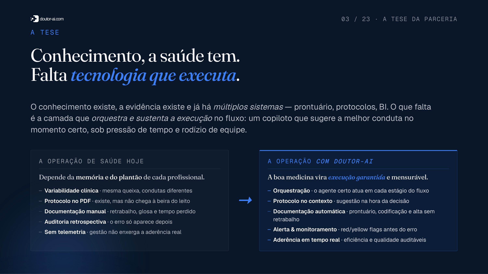
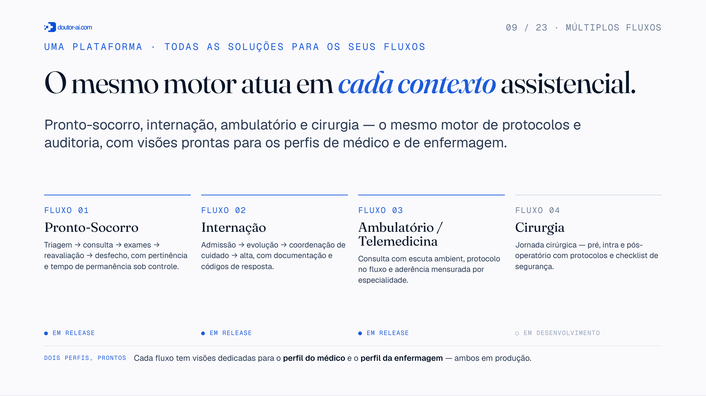
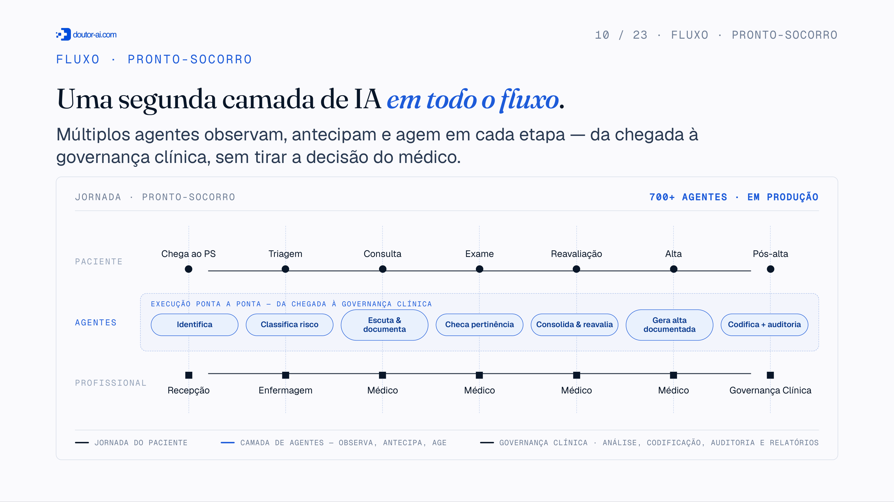
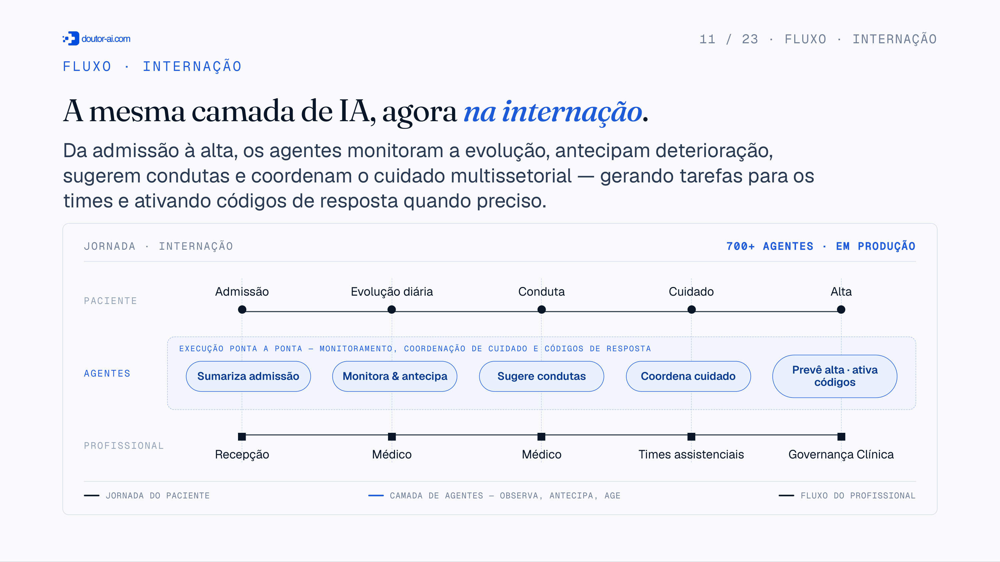
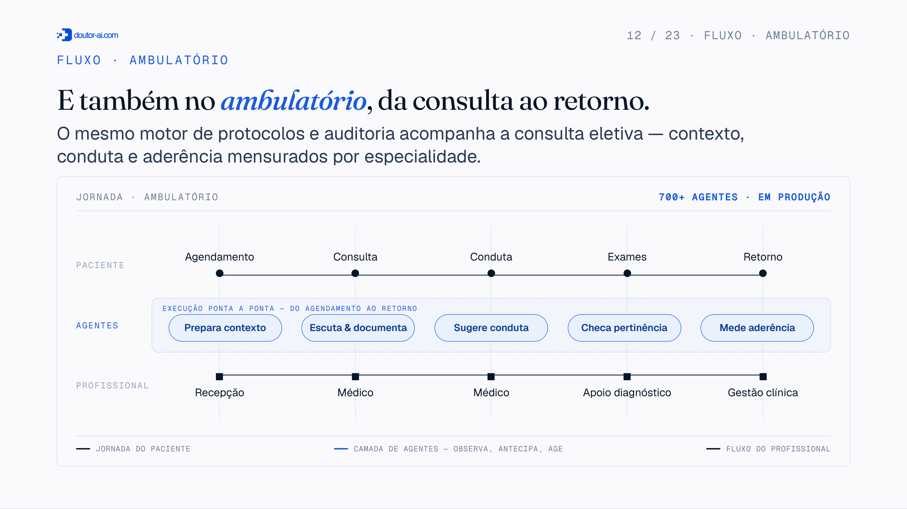
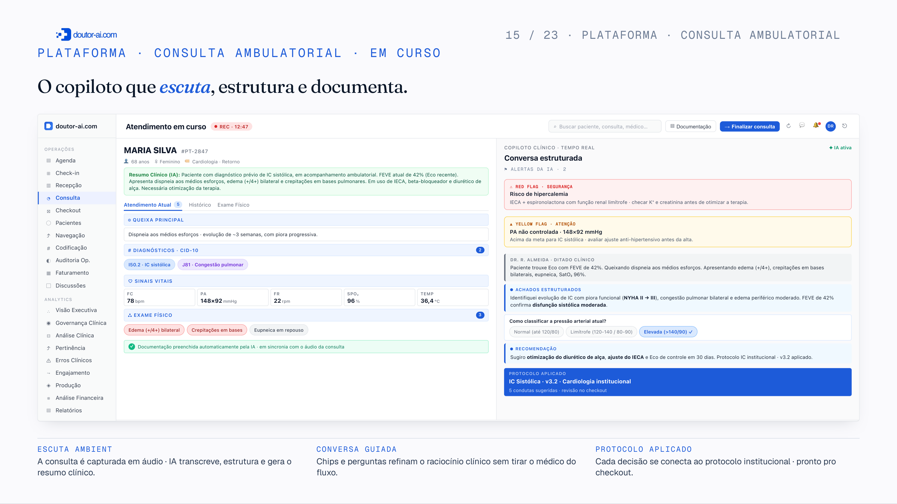
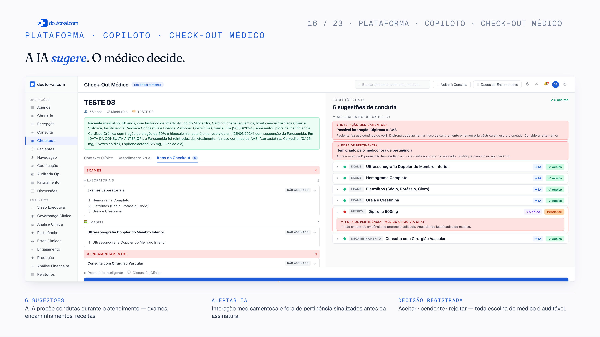
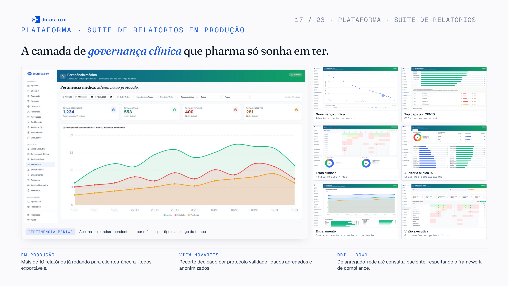

A Doutor-AI é a camada que orquestra e garante a execução da decisão dentro do fluxo
assistencial — pronto-socorro, ambulatório, internação e enfermagem.
Para hospitais e operadoras verticalizadas, isso significa menos variabilidade clínica, mais
aderência a protocolo e eficiência operacional mensurável.
550K+
atendimentos processados pela plataforma em produção.
22
unidades ativas · 77 em implantação · 1.842 médicos.
98%
assertividade clínica auditada em coorte de 12 instituições.
+65%
aderência a protocolos clínicos institucionais pós-implantação.

04 / 24 · A SOLUÇÃO
A SOLUÇÃO · ARQUITETURA DE EXECUÇÃO
A camada que opera o fluxo do hospital inteiro.
Tudo o que o hospital precisa para orquestrar a operação em um só lugar — uma
arquitetura de execução que roda em paralelo ao trabalho de médicos e enfermeiros,
do atendimento à governança.
01 · COPILOTO
Escuta ambient e documentos automáticos
Transcrição clínica, preenchimento automático do prontuário e dos documentos, sugestão de CID e checagem de red flags durante o atendimento.
02 · PROTOCOLOS
Central editorial de evidência
Protocolos institucionais versionados, com fonte e referência. A evidência certa, no momento certo da decisão.
03 · AUDITORIA
Aderência & pertinência em tempo real
Aderência médica × protocolo, pertinência de exames e condutas, top gaps por especialidade e drill-down por médico.
04 · GOVERNANÇA
Dashboards clínicos e financeiros
Dashboards de governança, produção, erros clínicos e impacto financeiro — visão executiva auditável.
05 / 24 · COPILOTO ASSISTENCIAL
PROPOSTA DE VALOR · 01 DE 04
Transcreve a consulta e monta o prontuário sozinho.
A escuta ambient captura a conversa e devolve um prontuário estruturado —
anamnese, exame físico, hipóteses e CID — sem o médico digitar.
O tempo de tela vira tempo de paciente.
−70%do tempo gasto em documentação clínica.
−50%de burnout médico — metade do burnout vem do preenchimento de documentação. Menos tela, mais olho no paciente.
30–40%de redução no tempo de consulta — menos burocracia, mais atendimentos no dia.
COMO FUNCIONA
01
Escuta ambient
Captura a consulta em áudio, sem formulário.
02
Estrutura clínica
Anamnese, exame, hipóteses e CID organizados automaticamente.
03
Revisão em 1 clique
O médico valida e assina — o registro nasce completo e auditável.
04
Alertas clínicos em tempo real
Red/yellow flags de sepse, deterioração, interações medicamentosas e contraindicações — gerados durante a consulta, não em background.
06 / 24 · PERTINÊNCIA BASEADA EM PROTOCOLOS
PROPOSTA DE VALOR · 02 DE 04
Garante a pertinência antes de decidir.
Antes de sugerir qualquer conduta, a plataforma entende o contexto e traz a evidência — garantindo
a pertinência de exames, internações e condutas frente ao quadro e ao protocolo. Menos desperdício, glosa e
exposição do paciente, sem travar a autonomia médica.
−51%de glosas em unidades com pertinência ativa.
COMO FUNCIONA
01
Entende o contexto
Quadro clínico, histórico, exames e protocolo aplicável.
02
Traz a evidência
Cruza solicitação com indicação clínica e diretriz.
03
Garante a pertinência
Sinaliza desvio antes do faturamento · justificativa auditável · menos retrabalho.
07 / 24 · PADRÃO DE QUALIDADE PARA TOMADA DE DECISÃO
PROPOSTA DE VALOR · 03 DE 04
Eleva o padrão de qualidade de cada decisão.
Mais do que sugerir a melhor conduta, a plataforma transforma cada decisão em um padrão auditável:
a conduta é medida contra o protocolo institucional e a gestão ganha visibilidade da aderência, das
condutas clínicas e da taxa de glosa por médico.
+65%de aderência ao protocolo institucional.
NA INTERNAÇÃO
Doutor-AI faz um screening contínuo do paciente: red e yellow flags, interações e contraindicações, pontos de inflexão e sinais de deterioração ou melhora.
COMO FUNCIONA
01
Sugere a melhor conduta
Ranqueia a evidência para o caso; o médico decide e prescreve, sempre.
02
Mede a aderência
Cada decisão é comparada ao protocolo institucional, em tempo real.
03
Audita os profissionais
O gestor enxerga taxa de glosa, condutas clínicas e aderência por médico.
04
Dá visibilidade à gestão
Drill-down por especialidade e por médico · governança do dado e da operação.
05
Documenta com rastreabilidade
Conduta e justificativa registradas com fonte e versão — prontas para auditoria.
08 / 24 · GOVERNANÇA DOS DADOS EM TEMPO REAL
PROPOSTA DE VALOR · 04 DE 04
A governança do dado clínico e operacional em tempo real.
Cada atendimento gera dados estruturados e auditáveis — a plataforma consolida aderência,
qualidade do prontuário, pertinência e impacto financeiro em tempo real,
entregando visibilidade executiva completa para gestores e equipes assistenciais.
24/7monitoramento contínuo · 98% de assertividade auditada.
COMO FUNCIONA
01
Telemetria em tempo real
Aderência, qualidade do prontuário e pertinência mensuradas a cada atendimento.
02
Dashboards executivos
Produção, erros clínicos, glosas e ROI assistencial em painel único e exportável.
03
Drill-down até o médico
De rede até consulta-paciente — rastreabilidade total com framework de compliance.
04
Auditoria por IA secundária
Cada sugestão auditada e registrada com changelog · conformidade SBIS-CFM 2.




13 / 24 · CLIENTES & PARCEIROS
CLIENTES & PARCEIROS
Construído com instituições de referência.
Aplicações em hospitais, redes, operadoras e telemedicina — em fluxos assistenciais e operacionais.
REDE HOSPITALAR
Rede D'Or São Luiz
Jornadas assistenciais e operacionais em ambiente hospitalar.
· ESCOPO SIMILAR
OPERADORA / REDE CREDENCIADA
Unimed
Do atendimento ao credenciado — auditoria e faturamento.
TELEMEDICINA
Topmed
Telemedicina e atendimento à distância em escala.
OPERADORA VERTICALIZADA
Leve Saúde
Operadora verticalizada com modelo próprio de cuidado.
+25
unidades / operadoras
Operadoras verticalizadas e redes regionais
Replicação do modelo de prontuário-com-IA em rede credenciada
14 / 24 · VALOR POR ÁREA
VALOR POR PÚBLICO INTERNO
Uma plataforma. Quatro públicos.
Operações
Redução de retrabalho
Padronização do fluxo
Ganho de produtividade
Assistência
Melhor coleta de dados clínicos
Apoio à decisão em tempo real
Alertas e protocolos institucionais
Gestão
Mais visibilidade da operação
Indicadores da jornada
Eficiência operacional
Financeiro
Redução de perdas
Melhor documentação clínica
Apoio a glosas e pertinência
O mesmo motor de IA gera ganhos simultâneos para áreas com objetivos distintos, o que facilita o caso de uso interno e a priorização da implantação.
15 / 24 · ARQUITETURA · A MECÂNICA DA RECOMENDAÇÃO
ARQUITETURA · COMO A RECOMENDAÇÃO NASCE
A melhor evidência para aquele caso específico.
CAMADA 1 · PRIORITÁRIA
Protocolos institucionais do hospital
RAG · busca semântica de baixo custo · respeita curadoria local
Pondera diretriz, protocolo e contexto regional · escolhe a melhor evidência para o caso
+700 AGENTES EM PRODUÇÃO
→
CAMADA 2 · FALLBACK DE QUALIDADE
Protocolos proprietários Doutor-AI
sLLM proprietário · eleva o padrão quando o hospital não tem o seu
▼
2º retorna
SUGESTÃO DEVOLVIDA
Conduta personalizada
ranqueada para o caso · auditada pela IA secundária
→
M
Médico prescreve
IA sugere · médico prescreve
Red/yellow flags que indicam pertinência clínica do pedido externo do médico em tempo real ou alertas de interação medicamentosa.
FAIXA CONTÍNUAAuditoria por IA secundária · monitoramento contínuo · telemetria de aderência ao longo de toda a jornadaSBIS-CFM 2 · SAMPLE REVIEW MÉDICA · CHANGELOG AUDITÁVEL


18 / 24 · PLATAFORMA · SUITE DE RELATÓRIOS EM PRODUÇÃO
PLATAFORMA · SUITE DE RELATÓRIOS EM PRODUÇÃO
A camada de governança clínica de toda a operação assistencial.

18 / 24 · PLATAFORMA · SUITE DE RELATÓRIOS EM PRODUÇÃO
PLATAFORMA · SUITE DE RELATÓRIOS EM PRODUÇÃO
A camada de governança clínica de toda a operação assistencial.